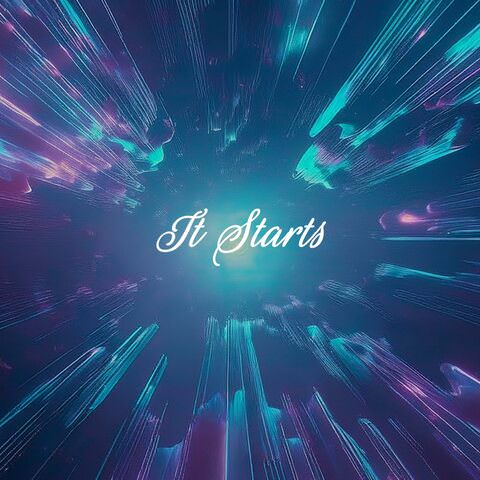

Acoustic • Ambient • Dream Pop
Marios Evripidou creates music that blends dream pop, acoustic sounds, and ambient atmospheres. Born in 1985, he has a technical mindset coupled with a background in computer engineering, but he’s always been equally drawn to writing poetry and personal thoughts. Today, with the help of modern technology, he combines both, turning words into music and crafting emotional soundscapes that tell personal stories.
...and yet he feels, believes and dreams that soon he will be there...

"It Starts" is a collection of reflections written across two decades, now reimagined through sound. Poems become melodies, memories turn into ambient landscapes, inviting the listener into a personal world of emotion and thought.
Amazon Music Apple Music BandCamp Spotify YouTube YouTube Music